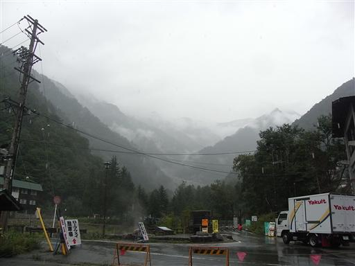
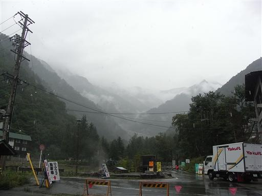

穂高岳 撤退
| 日付 | 2008年9月13日（土） |
|---|---|
| 山域 | 北アルプス |
| メンバー | 友人（男2） |
| 山行形態 | 前夜発日帰り |
| アクセス | 電車、バス |
7月辺りから計画していた9月第2週の3連休に穂高岳に行くことにする。
西穂から奥穂の岩稜ルートをめざす。
夜行バスに乗って新穂高温泉到着。
天気予報では曇時々雨予報だったが雨足はかなり激しい。

この天気では明日の山行も行えなさそうなので、平湯温泉に寄って帰ることにする。

松本駅に出ると青空が広がっていた。

| 日付 | 2008年9月13日（土） |
|---|---|
| 山域 | 北アルプス |
| メンバー | 友人（男2） |
| 山行形態 | 前夜発日帰り |
| アクセス | 電車、バス |
夜行バスに乗って新穂高温泉到着。
天気予報では曇時々雨予報だったが雨足はかなり激しい。

この天気では明日の山行も行えなさそうなので、平湯温泉に寄って帰ることにする。
松本駅に出ると青空が広がっていた。